Laufzeit-Topologie¶
Wie die Prozesse auf der VM zusammenhängen — welcher Dienst auf welchem Port lauscht und wer mit wem spricht. Ergänzt das logische Schichtenbild auf der Startseite um die Betriebssicht.
Quelle der Wahrheit sind die Installer-Skripte (deploy/lib.sh, deploy/install.sh) und cmp/config/settings/production.py.
Produktion (nach install.sh)¶

Ohne nginx
Mit --skip-nginx entfällt der Reverse-Proxy komplett. Das Portal ist dann nur auf 127.0.0.1:8001 erreichbar — ohne TLS und ohne Zugriff von außen.
Wer macht was¶
Vier Dienste, vier klar getrennte Aufgaben. Keiner davon ist optional zu ersetzen — sie lösen verschiedene Probleme.
nginx — das Netzwerk¶
Der einzige Dienst, der von außen erreichbar ist. Er terminiert TLS (das Zertifikat liegt nur hier), liefert statische Dateien direkt von der Platte aus (/static/, expires 30d) und puffert Requests langsamer Clients.
Der letzte Punkt ist der eigentliche Grund für den Proxy: Gunicorn hat nur 3 Worker, und ein sync-Worker ist während der gesamten Übertragung belegt. Ohne nginx davor würden drei lahme Verbindungen das Portal blockieren. nginx nimmt den Request vollständig entgegen und reicht ihn in einem Rutsch weiter — der Python-Worker ist nur für die reine Rechenzeit belegt.
gunicorn — Python ausführen¶
Django spricht kein HTTP, sondern WSGI — ein Python-Aufrufprotokoll. Gunicorn ist der Übersetzer: er nimmt HTTP entgegen, ruft config.wsgi:application auf und gibt die Antwort zurück. Ohne einen WSGI-Server läuft Django in Produktion überhaupt nicht.
Hier läuft der gesamte Web- und Service-Layer aus dem logischen Architekturbild: Views, Forms, Services, ORM. 3 Worker, Timeout 60 s, gebunden an 127.0.0.1:8001 — von außen unerreichbar, der einzige Weg hinein führt über nginx.
Redis — die Warteschlange¶
Reiner Zwischenspeicher zwischen Web und Worker, hält keine Geschäftsdaten (die liegen in PostgreSQL). Redis ist hier beides: Broker (Gunicorn legt Tasks ab, Celery holt sie) und Result-Backend (Celery legt Ergebnisse ab). Beides auf redis://localhost:6379/0.
Redis ist der einzige Weg, auf dem die beiden Prozesse miteinander reden — sie kennen sich sonst nicht.
Celery — die lange Arbeit¶
Ein eigener Prozess ohne Listener, der nur ausgehend spricht. Er arbeitet Provisioning-Tasks ab, die externe Pipelines anstoßen und deutlich länger dauern als ein HTTP-Request warten sollte.
Der Ablauf: Die View ruft den ProvisioningService, der legt den Task in Redis ab, die View antwortet sofort. Der Worker (--concurrency=2) holt den Task und arbeitet ihn asynchron ab — der Nutzer wartet nicht.
| Dienst | Aufgabe in einem Satz | Lauscht auf |
|---|---|---|
| nginx | TLS, statische Dateien, Puffer gegen langsame Clients | :80 / :443 |
| gunicorn | führt Django-Code aus (HTTP ↔ WSGI) | 127.0.0.1:8001 |
| Redis | Warteschlange zwischen Web und Worker | localhost:6379 |
| Celery | arbeitet lange Tasks ab, ohne den Request zu blockieren | nichts (nur ausgehend) |
| PostgreSQL | alle Geschäftsdaten | 127.0.0.1:5432 |
Merksatz: nginx macht das Netzwerk, Gunicorn macht Python, Redis macht die Übergabe, Celery macht das Warten.
TLS: Zertifikat vorhanden oder nicht¶
Der Installer erzeugt kein self-signed Zertifikat. Er prüft, ob /etc/pki/cmp/cmp.crt existiert und dessen SAN zum FQDN passt, und wählt danach den nginx-Modus:
| Zertifikat passt zum FQDN | kein / unpassendes Zertifikat | |
|---|---|---|
| Modus | https |
http |
| nginx-Listener | :80 → 301 auf :443, :443 ssl |
nur :80, proxyt direkt |
| firewalld | http und https | nur http |
| Browser | normale HTTPS-Verbindung, keine Meldung | unverschlüsseltes HTTP |
Ohne Zertifikat gibt es keine Zertifikatswarnung — es gibt gar kein HTTPS
Im HTTP-Modus existiert kein 443-Listener. Ein Aufruf von https://<fqdn>/ läuft ins Leere (Connection refused) — es erscheint keine wegklickbare Browser-Warnung. Port 443 wird in firewalld gar nicht erst geöffnet.
Das ist Absicht: Ein self-signed Zertifikat gewöhnt Nutzer daran, Sicherheitswarnungen wegzuklicken, und verschleiert, dass die Verbindung ungeprüft ist. Ein Redirect auf 443 liefe ohne Zertifikat ohnehin ins Leere. Der Installer warnt stattdessen deutlich, dass das Portal über unverschlüsseltes HTTP läuft.
Nachträglich auf HTTPS umstellen: cmp.crt + cmp.key nach /etc/pki/cmp/ legen, install.sh erneut ausführen. Der Modus wird neu bestimmt, nginx umkonfiguriert, Port 443 freigegeben. Ein vom Admin eingespieltes Zertifikat wird dabei nie angetastet — der Installer ersetzt nur Zertifikate, die er selbst erzeugt hat (Issuer == Subject).
Ports auf einen Blick¶
| Port | Dienst | Bindung | Von außen erreichbar |
|---|---|---|---|
| 443 | nginx (TLS) | alle Interfaces | ✓ — nur im HTTPS-Modus in firewalld freigegeben |
| 80 | nginx | alle Interfaces | ✓ — Redirect auf 443, im HTTP-Modus proxyt es direkt |
| 8001 | gunicorn | 127.0.0.1 |
✗ nur lokal |
| 6379 | Redis | localhost |
✗ nur lokal |
| 5432 | PostgreSQL | 127.0.0.1 |
✗ nur lokal |
| — | Celery-Worker | kein Listener | ✗ spricht nur ausgehend zu Redis + PostgreSQL |
Nur nginx ist exponiert. Alles dahinter lauscht ausschließlich auf Loopback — deshalb reicht ein Zertifikat an genau einer Stelle.
Zugriff vom Client¶
Typischer Testaufbau: Das Release wird auf einer AlmaLinux-VM per install.sh installiert, aufgerufen wird das Portal von einem separaten Client im selben Netz.
Aufruf im Browser des Clients — ohne Zertifikat über HTTP:
Port 80 ist im HTTP-Modus in firewalld freigegeben. Gunicorn, Redis und PostgreSQL lauschen nur auf Loopback und werden vom Client nie direkt angesprochen.
Es muss der FQDN sein, nicht die IP¶
Der Installer fragt den FQDN ab und schreibt ihn wörtlich nach /etc/cmp/cmp.env:
Ein Aufruf über http://<ip>/ endet deshalb in Djangos DisallowedHost (HTTP 400). Verwende exakt den Namen, der bei der Installation eingegeben wurde.
Namensauflösung auf dem Client¶
Existiert in der Testumgebung kein DNS-Eintrag, muss der Client den Namen selbst auflösen:
| System | Datei |
|---|---|
| Linux / macOS | /etc/hosts |
| Windows | C:\Windows\System32\drivers\etc\hosts (als Administrator) |
Häufigste Ursache für „Portal geht nicht"
Nach einer sauberen Installation läuft die VM, aber der FQDN zeigt vom Client aus nirgendwohin. Vor der Fehlersuche im Portal erst ping <fqdn> und curl -I http://<fqdn>/ vom Client aus prüfen.
Zugriff per IP nachrüsten¶
Soll das Portal zusätzlich über die IP erreichbar sein, beide Zeilen in /etc/cmp/cmp.env erweitern:
ALLOWED_HOSTS=cmp.internal.example.com,192.168.x.y
CSRF_TRUSTED_ORIGINS=http://cmp.internal.example.com,http://192.168.x.y
CSRF_TRUSTED_ORIGINS braucht das Schema (http://), ALLOWED_HOSTS steht ohne. Wird die CSRF-Zeile vergessen, lädt die Seite zwar, aber jedes Formular — inklusive Login — scheitert an der CSRF-Prüfung.
Einstiegspunkte nach Rolle¶
Alles läuft über eine Adresse (http://<fqdn>/ bzw. https:// mit Zertifikat) — es gibt keinen separaten Admin-Host und keinen zweiten Port. Was jemand sieht, entscheidet allein die Rolle am User-Objekt. Ungenehmigter Zugriff wird vom jeweiligen Mixin abgewiesen.

| Einstieg | URL | Ab Rolle | Gate |
|---|---|---|---|
| Login | /accounts/login/ |
— | allauth, Session-Auth |
| Dashboard (Startseite) | / |
requester | RequesterRequiredMixin |
| Katalog | /catalog/ |
requester | RequesterRequiredMixin |
| Bestellungen | /orders/ |
requester | RequesterRequiredMixin |
| Laufende Services | /subscriptions/ |
requester | RequesterRequiredMixin |
| Benachrichtigungen | /notifications/ |
requester | RequesterRequiredMixin |
| Profil | /accounts/profile/ |
requester | RequesterRequiredMixin |
| Genehmigungs-Queue | /approvals/ |
approver | ApproverRequiredMixin |
| Audit-Log (+ Export) | /audit/ |
admin | AdminRequiredMixin |
| Django Admin | /admin/ |
— (is_staff) |
Django-Admin-eigene Prüfung |
Der Django Admin ist der eine Einstieg, der nicht über ein Rollen-Mixin läuft: er prüft ausschließlich Djangos is_staff-Flag. Beim Seeden setzt AccountService.seed_stub_users() das Flag automatisch für die Rollen admin und superadmin (und is_superuser für superadmin). Bei manuell im Admin angelegten Nutzern muss is_staff dagegen separat gesetzt werden — Rolle admin allein öffnet den Django Admin dort nicht.
Die Rollen sind kumulativ: superadmin ⊃ admin ⊃ approver ⊃ requester. Ein Approver erreicht also auch Katalog und Bestellungen; die Queue bleibt einem Requester dagegen verschlossen.
Es gibt keine Registrierung
ACCOUNT_SIGNUP_ENABLED=False. Jeder Account wird von einem Admin im Django Admin angelegt — das ist der Einstiegspunkt für User-Verwaltung, nicht das Portal selbst.
systemd-Units¶
| Unit | Startet | Abhängigkeiten |
|---|---|---|
cmp-web.service |
gunicorn, 3 Worker, Timeout 60 s | Requires PostgreSQL, After redis |
cmp-celery.service |
Celery-Worker, --concurrency=2 |
Requires PostgreSQL, After redis |
nginx |
Reverse-Proxy + TLS | — |
redis |
Broker | — |
postgresql-16.service |
Datenbank (PGDG) | — |
Der PostgreSQL-Unit-Name hängt von der Paketquelle ab: PGDG → postgresql-16.service, AppStream → postgresql.service. Der Installer ermittelt ihn zur Laufzeit und schreibt ihn in die Units.
Beide CMP-Units laufen mit NoNewPrivileges, PrivateTmp, ProtectSystem=full, ProtectHome und Restart=on-failure (5 s).
Warum Celery überhaupt¶
Provisioning-Tasks stoßen externe Pipelines an und dauern länger als ein HTTP-Request warten sollte. Der ProvisioningService legt den Task in Redis ab, die View antwortet sofort, der Worker arbeitet ihn asynchron ab. Redis ist dabei beides: Broker (Warteschlange) und Result-Backend — beide auf redis://localhost:6379/0.
Entwicklung¶

Kein nginx, kein gunicorn, kein Worker-Prozess: ./run.sh startet manage.py runserver 8000. Redis ist in Dev optional — mit CELERY_TASK_ALWAYS_EAGER führt Celery Tasks synchron im Request aus, so laufen auch die Tests.
| Entwicklung | Produktion | |
|---|---|---|
| Web | runserver :8000 |
nginx :443 → gunicorn :8001 |
| Tasks | inline (EAGER) | Celery-Worker über Redis |
| Redis | optional | erforderlich |
| Static | Django serviert | nginx, expires 30d |
| Settings | config.settings.development |
config.settings.production |